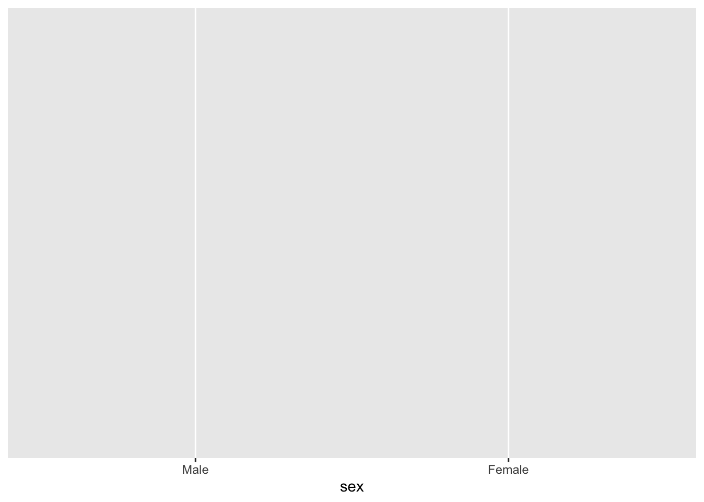
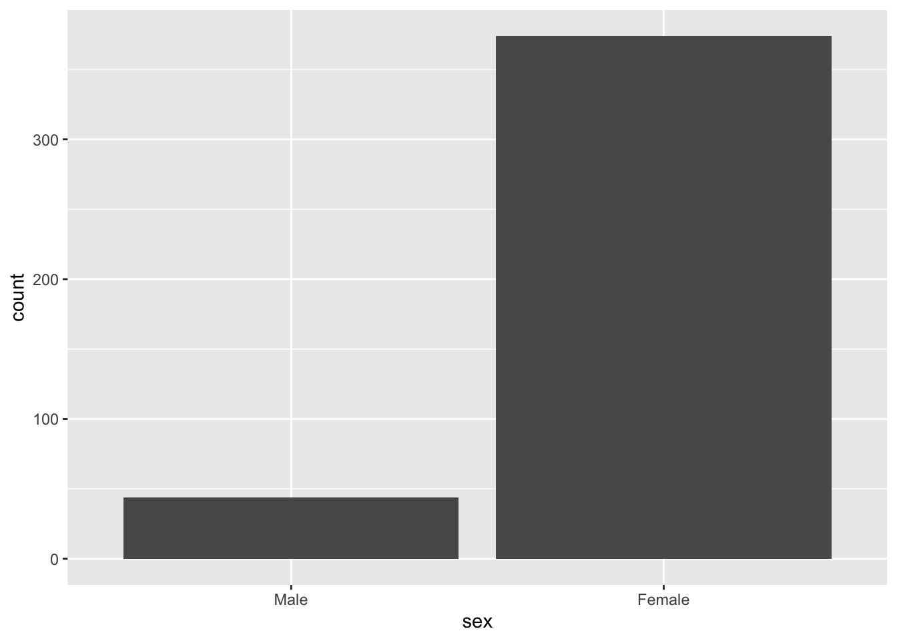
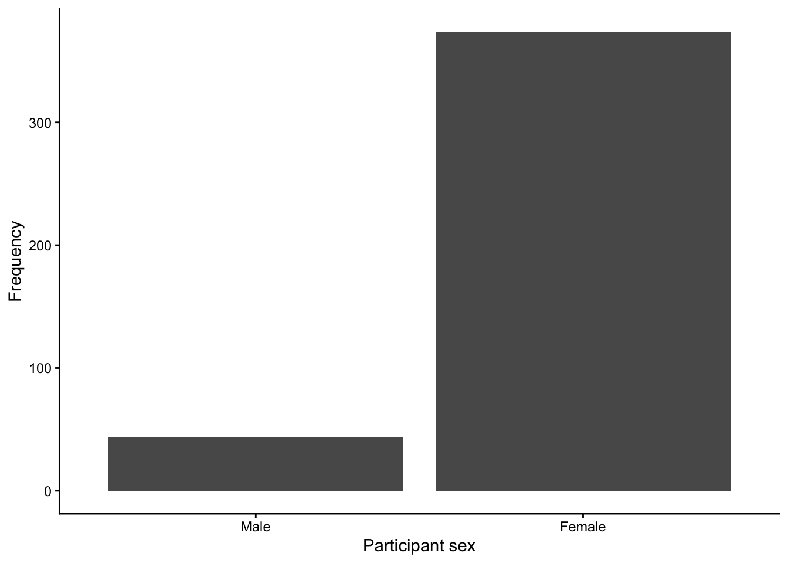
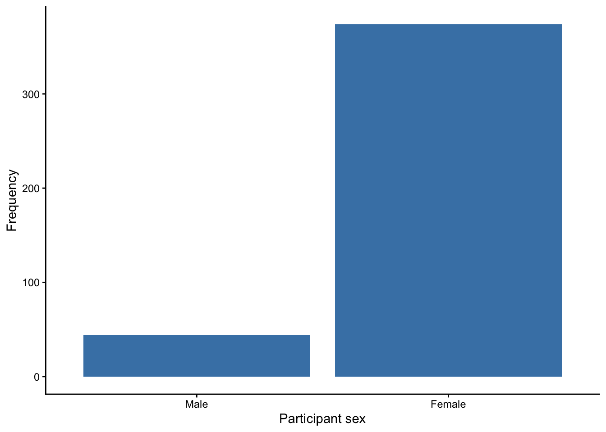
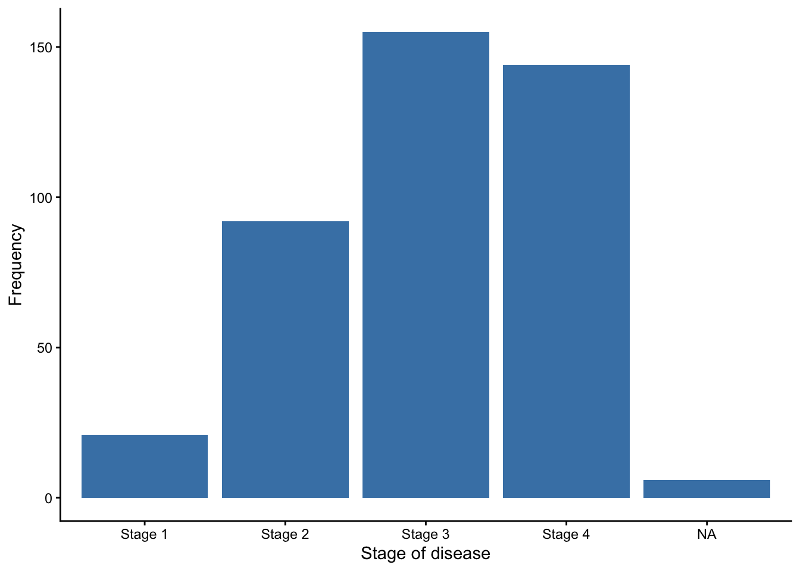
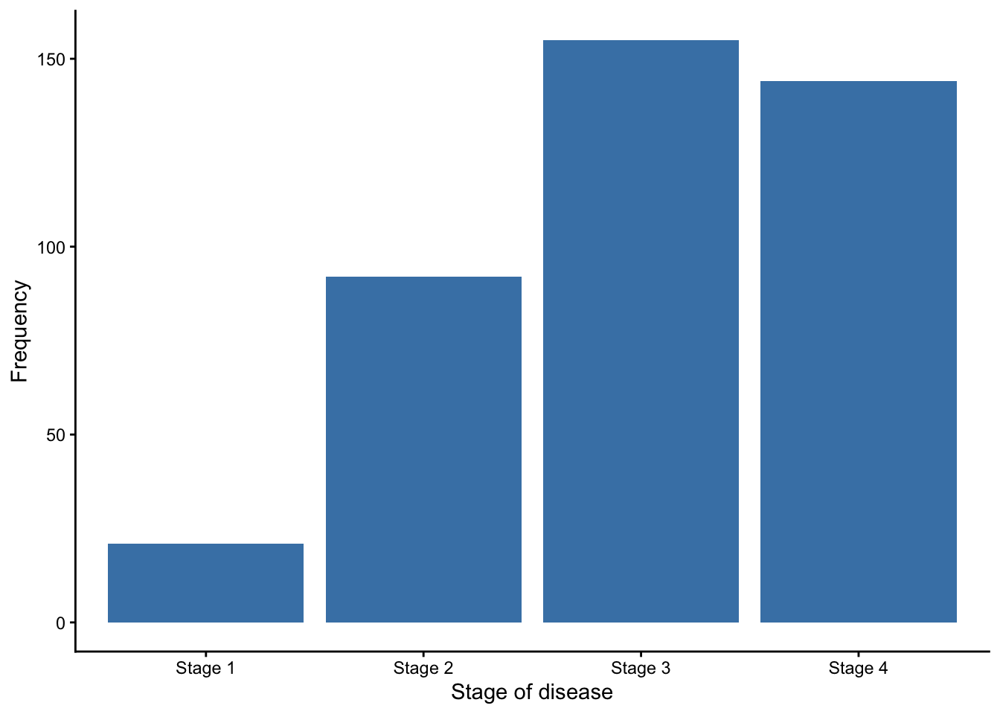

library(ggplot2)
ggplot()
ggplot2Plots produced by the plot(dens()) and boxplot() functions have used so-called base graphics: no special packages have been needed to produce these plots. In this section, we will introduce the ggplot2 1 package, which defines plots using a grammar of graphics. This can seem like a complex way of constructing a plot, but the framework allows for very complex plots to be constructed in a relatively consistent way.
The key elements of a plot that we will use in this course:
age variable and the colour of points by sex. We can define our mapping using the command mapping = aes(), and entering the specific aesthetic components within the aes() component.geom_bar() will plot a bar-chart;geom_boxplot() will plot a boxplot;geom_histogram() will plot a histogram.theme_bw(): a black-and-white themetheme_minimal(): a clean them with no background annotationstheme_classic(): a theme that removes gridlines and backrounds, leaving only axis lines.These elements can be combined in a single ggplot command by using a + symbol, usually with each element provided on a new line.
ggplot2 to construct a bar chartAs a demonstration, we will produce the simplest bar chart possible: a bar chart of sex.
First, we will load the ggplot2 library, and call the ggplot function with no function arguments.
library(ggplot2)
ggplot()
In this example, all ggplot has done is to create a blank canvas. Let’s start filling the canvas in by specifying our dataset, and defining sex as our x-axis:
ggplot(data=pbc, mapping = aes(x=sex))
Our blank canvas has been altered: we now have an x-axis, defined by sex, with values of Male and Female.
To add “ink” to our canvas, we now need to add a geometry. For a bar chart, we use geom_bar() as follows:
ggplot(data=pbc, mapping = aes(x=sex)) +
geom_bar()
Finally, we can change the look of the figure by choosing a different theme:let’s use theme_classic() here.
ggplot(data=pbc, mapping = aes(x=sex)) +
geom_bar() +
theme_classic()
We can change the axis labels using xlab() and ylab():
ggplot(data=pbc, mapping = aes(x=sex)) +
geom_bar() +
theme_classic() +
xlab("Participant sex") +
ylab("Frequency")
Finally, we can change the colour of the bars by specifying a fill colour within the geom_bar() command. We can choose one of over 600 (!) colours by name 2.
ggplot(data=pbc, mapping = aes(x=sex)) +
geom_bar(fill="steelblue") +
theme_classic() +
xlab("Participant sex") +
ylab("Frequency")
Let’s adapt this code to produce a bar chart for stage of disease:
ggplot(data=pbc, mapping = aes(x=stage)) +
geom_bar(fill="steelblue") +
theme_classic() +
xlab("Stage of disease") +
ylab("Frequency")
Note that ggplot has included a separate bar for the missing values (i.e. the NA values). We can instruct R to ignore the missing values in the ggplot function by specifying the data to be a subset of pbc. The command: subset(pbc, is.na(stage) == FALSE) essentially creates a temporary subset of the pbc dataset where stage is not missing. Putting it all together:
ggplot(data=subset(pbc, is.na(stage) == FALSE), mapping = aes(x=stage)) +
geom_bar(fill="steelblue") +
theme_classic() +
xlab("Stage of disease") +
ylab("Frequency")
|>: aka the “pipe”Consider the previous example, which essentially combines two functions: ggplot() and subset() by using: ggplot(subset()) - in other words, subset() has been nested within ggplot(). When R comes across nested functions, it will happily run the inner-most function first, then applies the outer function to the result of the inner function.
While this code is understandable by R, one could argue this code is difficult to understand for a person. A more interpretable version of this code for a person would be:
subset() function, and thenggplot() function.This can be rewritten using the |> symbol:
subset() |>
ggplot()This syntax would “pipe” the results of the first function into the second function, and produces code that is much easier for a person to read. So our previous bar chart of stage of disease can be rewritten as:
subset(pbc, is.na(stage) == FALSE) |>
ggplot(mapping = aes(x=stage)) +
geom_bar(fill="steelblue") +
theme_classic() +
xlab("Stage of disease") +
ylab("Frequency")
Notice that when we pipe a dataset from the subset() function, we no longer need to specify the name of the dataset in ggplot(): the dataset is inferred from the action of the subset() function.
The |> pipe was introduced in R version 4.1.0, May 2021, and for this author (TD), has drastically improved the code that I write (and read!). When reading code that I, or others, have written using the pipe, I replace |> by the words and then. So the previous code would be read: subset the data and then plot the data.
Note that the package is called ggplot2 as it is a complete overhaul of the package called ggplot. The main function used in the ggplot2 package is ggplot(). This can be confusing, but you will get used to this in time.↩︎
A list of available colours that can be used in ggplot can be found by entering the command grDevices::colours()↩︎